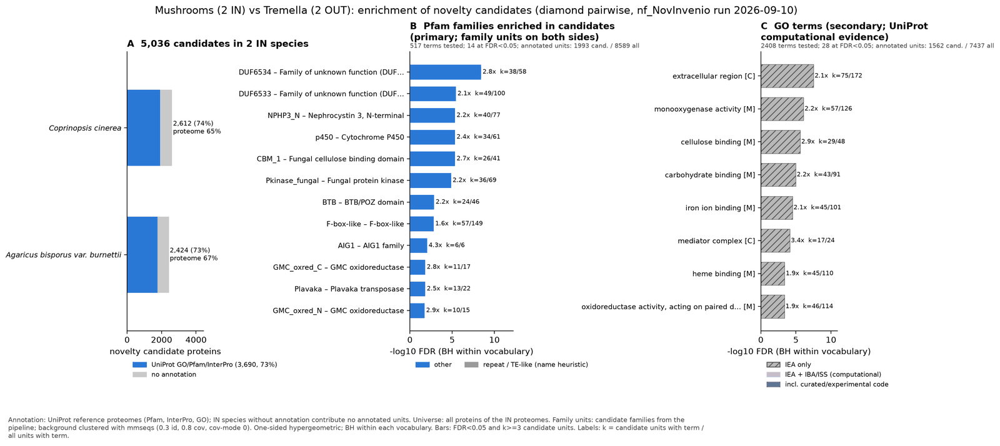

mushrooms tremella: functional enrichment (novelty)
One-sided hypergeometric test per term; Benjamini-Hochberg FDR within each scope, level and vocabulary. Candidates are the novelty candidates: gene families present in the IN group and absent from the OUT group. Universe: proteome. Background clustered: True (19502 sequences in 12962 clusters, mmseqs easy-cluster --min-seq-id 0.3 -c 0.8). Family level: one unit per candidate family and per background cluster.
Sources: Pfam: 2026-01-27-Pfam38.2; InterPro entries: 110.0; GO: releases/2026-07-26; analysis generated 2026-10-12T14:40:23. Source tables: studies/fungi/mushrooms_tremella/analysis/enrichment/outputs/proteome_clustered.
Full record: PROVENANCE. Run report: report.html.
- Annotation provenance is not fully recorded: PROVENANCE.yaml lists the per-species annotation files and their checksums, but not the UniProt release they come from.
- GO results are secondary. GO annotations include computational evidence (IEA, IBA); the GO evidence column shows if a term has non-IEA support.
- Candidate families (pipeline clustering of candidates) and background clusters (mmseqs clustering of the background proteome) are made by different runs, so family-level counts are not fully comparable.
- Low annotation: the candidate set has less than 50% annotation for GO 49.7%. Enrichment for these vocabularies has low power.
Summary figure

Annotation coverage
Fraction of proteins with at least one term per vocabulary. Universe = all proteins of the species; candidates = the candidate set.
| Species | Set | Proteins | Pfam | Pfam clan | InterPro | GO | Any |
|---|---|---|---|---|---|---|---|
| Ccin | universe | 13334 | 57.9% | 47.0% | 64.2% | 50.3% | 64.6% |
| Ccin | candidates | 2612 | 64.2% | 50.0% | 73.4% | 51.9% | 73.6% |
| Agbis | universe | 11204 | 61.2% | 49.9% | 67.1% | 53.3% | 67.3% |
| Agbis | candidates | 2424 | 63.7% | 49.2% | 72.6% | 47.4% | 72.9% |
| ALL_IN | universe | 24538 | 59.4% | 48.3% | 65.5% | 51.7% | 65.9% |
| ALL_IN | candidates | 5036 | 63.9% | 49.6% | 73.0% | 49.7% | 73.3% |
Tests summary
Per vocabulary: terms with FDR < 0.05 / terms tested. Protein level counts proteins; family level counts candidate families and background clusters.
| Scope | Level | Cand. units | Pfam sig / tested | Pfam clan sig / tested | InterPro sig / tested | GO sig / tested |
|---|---|---|---|---|---|---|
| whole_set | family | 3308 | 14 / 517 | 4 / 271 | 26 / 1169 | 28 / 2408 |
| whole_set | protein | 5036 | 36 / 891 | 21 / 339 | 68 / 2010 | 75 / 3038 |
| Agbis | family | 2040 | 8 / 291 | 4 / 217 | 14 / 730 | 18 / 1977 |
| Agbis | protein | 2424 | 20 / 380 | 10 / 234 | 41 / 935 | 34 / 2098 |
| Ccin | family | 2176 | 14 / 323 | 4 / 226 | 15 / 809 | 22 / 2077 |
| Ccin | protein | 2612 | 23 / 431 | 12 / 238 | 42 / 1039 | 39 / 2198 |
Top 25 Pfam terms (whole set, family level)
25 rows shown, ordered by FDR then p-value; 14 have FDR < 0.05 (bold).
| Term | Name | k / N cand. | n / M bg | Fold | FDR (BH) |
|---|---|---|---|---|---|
| PF20152 | DUF6534: Family of unknown function (DUF6534) | 38 / 1993 | 58 / 8589 | 2.824 | 3.68e-09 |
| PF20151 | DUF6533: Family of unknown function (DUF6533) | 49 / 1993 | 100 / 8589 | 2.112 | 3.43e-06 |
| PF24883 | NPHP3_N: Nephrocystin 3, N-terminal | 40 / 1993 | 77 / 8589 | 2.239 | 4.39e-06 |
| PF00067 | p450: Cytochrome P450 | 34 / 1993 | 61 / 8589 | 2.402 | 4.39e-06 |
| PF00734 | CBM_1: Fungal cellulose binding domain | 26 / 1993 | 41 / 8589 | 2.733 | 4.39e-06 |
| PF17667 | Pkinase_fungal: Fungal protein kinase | 36 / 1993 | 69 / 8589 | 2.248 | 1.30e-05 |
| PF00651 | BTB: BTB/POZ domain | 24 / 1993 | 46 / 8589 | 2.248 | 0.001 |
| PF12937 | F-box-like: F-box-like | 57 / 1993 | 149 / 8589 | 1.649 | 0.002 |
| PF04548 | AIG1: AIG1 family | 6 / 1993 | 6 / 8589 | 4.31 | 0.009 |
| PF05199 | GMC_oxred_C: GMC oxidoreductase | 11 / 1993 | 17 / 8589 | 2.789 | 0.015 |
| PF18759 | Plavaka: Plavaka transposase | 13 / 1993 | 22 / 8589 | 2.547 | 0.015 |
| PF00732 | GMC_oxred_N: GMC oxidoreductase | 10 / 1993 | 15 / 8589 | 2.873 | 0.018 |
| PF20153 | DUF6535: Family of unknown function (DUF6535) | 12 / 1993 | 20 / 8589 | 2.586 | 0.018 |
| PF01926 | MMR_HSR1: 50S ribosome-binding GTPase | 19 / 1993 | 40 / 8589 | 2.047 | 0.023 |
| PF12697 | Abhydrolase_6: Alpha/beta hydrolase family | 10 / 1993 | 17 / 8589 | 2.535 | 0.058 |
| PF20209 | DUF6570: Domain of unknown function (DUF6570) | 11 / 1993 | 20 / 8589 | 2.37 | 0.067 |
| PF13640 | 2OG-FeII_Oxy_3: 2OG-Fe(II) oxygenase superfamily | 7 / 1993 | 10 / 8589 | 3.017 | 0.067 |
| PF00561 | Abhydrolase_1: alpha/beta hydrolase fold | 15 / 1993 | 32 / 8589 | 2.02 | 0.076 |
| PF00550 | PP-binding: Phosphopantetheine attachment site | 6 / 1993 | 8 / 8589 | 3.232 | 0.076 |
| PF01485 | IBR: IBR domain, a half RING-finger domain | 6 / 1993 | 9 / 8589 | 2.873 | 0.166 |
| PF01535 | PPR: PPR repeat | 6 / 1993 | 9 / 8589 | 2.873 | 0.166 |
| PF03443 | AA9: Auxiliary Activity family 9 (formerly GH61) | 9 / 1993 | 17 / 8589 | 2.282 | 0.173 |
| PF00097 | zf-C3HC4: Zinc finger, C3HC4 type (RING finger) | 12 / 1993 | 26 / 8589 | 1.989 | 0.188 |
| PF13921 | Myb_DNA-bind_6: Myb-like DNA-binding domain | 5 / 1993 | 7 / 8589 | 3.078 | 0.190 |
| PF27041 | ZBED1_RNase-like: ZBED1 RNase-like domain | 5 / 1993 | 7 / 8589 | 3.078 | 0.190 |
Top 25 InterPro terms (whole set, family level)
25 rows shown, ordered by FDR then p-value; 25 have FDR < 0.05 (bold).
| Term | Name | k / N cand. | n / M bg | Fold | FDR (BH) |
|---|---|---|---|---|---|
| IPR045339 | Domain:Domain of unknown function DUF6534 | 38 / 2308 | 58 / 9650 | 2.739 | 2.27e-08 |
| IPR045340 | Domain:Domain of unknown function DUF6533 | 49 / 2308 | 100 / 9650 | 2.049 | 1.31e-05 |
| IPR050364 | Family:Cytochrome P450 monooxygenase, fungi | 16 / 2308 | 19 / 9650 | 3.521 | 1.31e-05 |
| IPR035971 | Homologous_superfamily:Cellulose-binding domain superfamily | 25 / 2308 | 38 / 9650 | 2.751 | 1.31e-05 |
| IPR036396 | Homologous_superfamily:Cytochrome P450 superfamily | 36 / 2308 | 66 / 9650 | 2.281 | 1.31e-05 |
| IPR000254 | Domain:Cellulose-binding domain | 26 / 2308 | 41 / 9650 | 2.651 | 1.31e-05 |
| IPR001128 | Family:Cytochrome P450 | 34 / 2308 | 61 / 9650 | 2.33 | 1.31e-05 |
| IPR056884 | Domain:Nephrocystin 3-like, N-terminal | 40 / 2308 | 77 / 9650 | 2.172 | 1.31e-05 |
| IPR040976 | Domain:Fungal-type protein kinase | 36 / 2308 | 69 / 9650 | 2.181 | 4.17e-05 |
| IPR029058 | Homologous_superfamily:Alpha/Beta hydrolase fold | 78 / 2308 | 195 / 9650 | 1.672 | 4.17e-05 |
| IPR000210 | Domain:BTB/POZ domain | 33 / 2308 | 64 / 9650 | 2.156 | 1.58e-04 |
| IPR007111 | Domain:NACHT nucleoside triphosphatase | 15 / 2308 | 21 / 9650 | 2.987 | 5.41e-04 |
| IPR017930 | Domain:Myb domain | 11 / 2308 | 13 / 9650 | 3.538 | 6.17e-04 |
| IPR011333 | Homologous_superfamily:SKP1/BTB/POZ domain superfamily | 39 / 2308 | 88 / 9650 | 1.853 | 0.002 |
| IPR012132 | Family:Glucose-methanol-choline oxidoreductase | 12 / 2308 | 16 / 9650 | 3.136 | 0.002 |
| IPR002401 | Family:Cytochrome P450, E-class, group I | 21 / 2308 | 38 / 9650 | 2.311 | 0.002 |
| IPR017972 | Conserved_site:Cytochrome P450, conserved site | 19 / 2308 | 35 / 9650 | 2.27 | 0.007 |
| IPR000073 | Domain:Alpha/beta hydrolase fold-1 | 23 / 2308 | 47 / 9650 | 2.046 | 0.011 |
| IPR001810 | Domain:F-box domain | 76 / 2308 | 219 / 9650 | 1.451 | 0.011 |
| IPR006703 | Domain:AIG1-type guanine nucleotide-binding (G) domain | 6 / 2308 | 6 / 9650 | 4.181 | 0.011 |
| IPR007867 | Domain:Glucose-methanol-choline oxidoreductase, C-terminal | 11 / 2308 | 17 / 9650 | 2.705 | 0.023 |
| IPR041078 | Domain:Plavaka transposase | 13 / 2308 | 22 / 9650 | 2.471 | 0.023 |
| IPR000172 | Domain:Glucose-methanol-choline oxidoreductase, N-terminal | 10 / 2308 | 15 / 9650 | 2.787 | 0.027 |
| IPR045338 | Domain:Domain of unknown function DUF6535 | 12 / 2308 | 20 / 9650 | 2.509 | 0.029 |
| IPR010998 | Homologous_superfamily:Integrase/recombinase, N-terminal | 5 / 2308 | 5 / 9650 | 4.181 | 0.036 |
Top 15 GO terms (whole set, family level) — secondary, computational evidence (IEA/IBA) included
15 rows shown, ordered by FDR then p-value; 15 have FDR < 0.05 (bold).
| Term | Name | k / N cand. | n / M bg | Fold | FDR (BH) | GO evidence | Families with non-IEA |
|---|---|---|---|---|---|---|---|
| GO:0005576 | cellular_component:extracellular region | 75 / 1562 | 172 / 7437 | 2.076 | 3.01e-08 | IEA_only | 0 |
| GO:0004497 | molecular_function:monooxygenase activity | 57 / 1562 | 126 / 7437 | 2.154 | 8.25e-07 | IEA_only | 0 |
| GO:0030248 | molecular_function:cellulose binding | 29 / 1562 | 48 / 7437 | 2.877 | 2.43e-06 | IEA_only | 0 |
| GO:0030246 | molecular_function:carbohydrate binding | 43 / 1562 | 91 / 7437 | 2.25 | 1.06e-05 | IEA_only | 0 |
| GO:0030247 | molecular_function:polysaccharide binding | 29 / 1562 | 53 / 7437 | 2.605 | 3.04e-05 | IEA_only | 0 |
| GO:0005506 | molecular_function:iron ion binding | 45 / 1562 | 101 / 7437 | 2.121 | 3.04e-05 | IEA_only | 0 |
| GO:0016592 | cellular_component:mediator complex | 17 / 1562 | 24 / 7437 | 3.373 | 7.25e-05 | IEA_only | 0 |
| GO:0020037 | molecular_function:heme binding | 45 / 1562 | 110 / 7437 | 1.948 | 3.94e-04 | IEA_only | 0 |
| GO:0046906 | molecular_function:tetrapyrrole binding | 45 / 1562 | 110 / 7437 | 1.948 | 3.94e-04 | IEA_only | 0 |
| GO:0016705 | molecular_function:oxidoreductase activity, acting on paired donors, with incorporation or reduction of molecular oxygen | 46 / 1562 | 114 / 7437 | 1.921 | 4.30e-04 | IEA_only | 0 |
| GO:0140110 | molecular_function:transcription regulator activity | 100 / 1562 | 320 / 7437 | 1.488 | 0.002 | IEA_only | 0 |
| GO:0016491 | molecular_function:oxidoreductase activity | 176 / 1562 | 636 / 7437 | 1.318 | 0.003 | IEA_only | 0 |
| GO:0005975 | biological_process:carbohydrate metabolic process | 95 / 1562 | 317 / 7437 | 1.427 | 0.014 | IEA_only | 0 |
| GO:0000272 | biological_process:polysaccharide catabolic process | 43 / 1562 | 119 / 7437 | 1.72 | 0.016 | IEA_only | 0 |
| GO:0000987 | molecular_function:cis-regulatory region sequence-specific DNA binding | 44 / 1562 | 123 / 7437 | 1.703 | 0.016 | IEA_only | 0 |
Actin cytoskeleton controls
Known actin-related families and how many of their proteins pass each filter. Protein ID columns are left out.
| control | pfam_ids | desc_regex | IN_universe | IN_in_matrix | IN_pass_ingroup_rule | candidates | near_miss_out1 | near_miss_out2 | n_Ccin | n_Agbis | n_CneoH99 | n_Tremes |
|---|---|---|---|---|---|---|---|---|---|---|---|---|
| Arp2/3 ARPC2 (P34-Arc) | PF04045 | 2 | 2 | 2 | 0 | 0 | 2 | 1 | 1 | 1 | 1 | |
| Arp2/3 ARPC3 (P21-Arc) | PF04062 | 2 | 2 | 2 | 0 | 0 | 2 | 1 | 1 | 1 | 1 | |
| Arp2/3 ARPC4 | PF05856 | 2 | 2 | 2 | 0 | 0 | 2 | 1 | 1 | 1 | 1 | |
| Arp2/3 ARPC5 (P16-Arc) | PF04699 | 2 | 2 | 2 | 0 | 0 | 2 | 1 | 1 | 1 | 1 | |
| Arp2/3 ARPC1 (description only) | arp2/3 complex.*(41|p41|subunit 1)|ARPC1 | 0 | 0 | 0 | 0 | 0 | 0 | 0 | 0 | 0 | 0 | |
| Arp2 / Arp3 (description only) | actin-related protein (2|3)\b|\bARP[23]\b | 12 | 12 | 12 | 0 | 0 | 12 | 5 | 7 | 5 | 5 | |
| WAVE complex NCKAP1 | PF09735 | 0 | 0 | 0 | 0 | 0 | 0 | 0 | 0 | 0 | 0 | |
| WAVE complex CYFIP (FragX_IP) | PF05994 | 0 | 0 | 0 | 0 | 0 | 0 | 0 | 0 | 0 | 0 | |
| WAVE complex ABI | PF07815|PF27594 | 0 | 0 | 0 | 0 | 0 | 0 | 0 | 0 | 0 | 0 | |
| SCAR/WAVE (SCAR_helical) | PF27569 | 0 | 0 | 0 | 0 | 0 | 0 | 0 | 0 | 0 | 0 | |
| WASP family (WH1) | PF00568 | 4 | 2 | 2 | 0 | 1 | 1 | 2 | 2 | 1 | 1 | |
| WH2 motif (WASP, WAVE, others) | PF02205 | 3 | 3 | 2 | 0 | 0 | 2 | 2 | 1 | 2 | 2 | |
| Formin FH2 | PF02181 | 4 | 4 | 4 | 0 | 1 | 3 | 2 | 2 | 1 | 2 | |
| Formin Drf_GBD / Drf_FH3 / Drf_DAD | PF06371|PF06367|PF06345 | 6 | 6 | 6 | 0 | 1 | 5 | 3 | 3 | 2 | 3 | |
| Ena/VASP (VASP_tetra) | PF08776 | 0 | 0 | 0 | 0 | 0 | 0 | 0 | 0 | 0 | 0 | |
| Coronin (description only) | coronin | 2 | 2 | 2 | 0 | 0 | 2 | 1 | 1 | 1 | 1 | |
| Cortactin (HS1_rep) | PF02218 | 0 | 0 | 0 | 0 | 0 | 0 | 0 | 0 | 0 | 0 | |
| Myosin 2 tail (Myosin_tail_1) | PF01576 | 1 | 1 | 1 | 0 | 0 | 1 | 1 | 0 | 0 | 0 | |
| Myosin head (all myosins) | PF00063 | 9 | 9 | 9 | 1 | 0 | 8 | 5 | 4 | 4 | 8 |
Page written by bin/generate_enrichment_page.py.